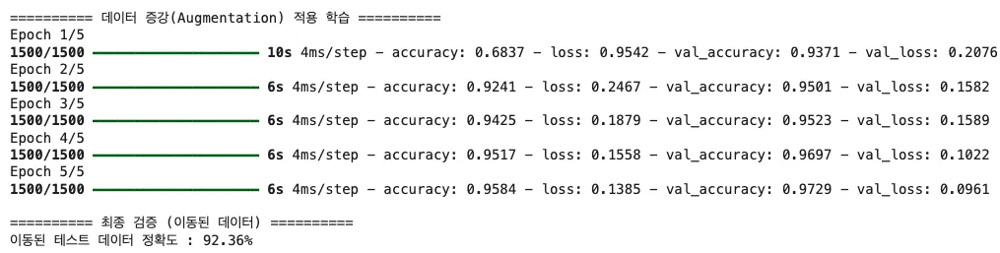
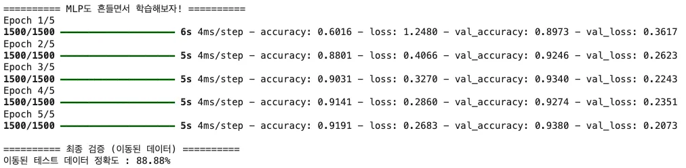

MNIST 코드에서 RandomFlip이 주석 처리된 이유는?
답을 고르면 바로 해설이 나타납니다.
Part 2 · Data Augmentation
같은 숫자를 회전하고 확대·축소해 더 다양한 상황을 연습시킨 뒤, CNN과 MLP가 이동된 숫자에 얼마나 강해졌는지 비교합니다.
Concept · S87
회전, 확대·축소, 이동, 반전, 밝기 변화로 원본의 의미를 유지한 새 표본을 만듭니다. 데이터 부족을 보완하고 일반화 성능을 높이며 과적합을 막는 방법입니다.
Interactive · Widget ⑤
Code 01 / 06
데이터 증강은 인위적인 변화로 데이터의 양과 다양성을 확보합니다. RandomFlip은 숫자와 알파벳처럼 좌우 반전 시 의미가 달라질 수 있어 주석 처리했고, RandomRotation과 RandomZoom을 사용합니다.
Code 02 / 06
데이터 증강 층은 학습할 때만 동작하고 평가와 예측에서는 자동으로 꺼집니다. Dropout과 같은 특성입니다.
Code 03 / 06
증강을 포함한 CNN도 같은 손실함수와 accuracy 지표로 컴파일합니다.
Code 04 / 06
증강된 학습 데이터로 5 epoch를 학습하고 원래 테스트 데이터로 일반화를 확인합니다.
Code 05 / 06
증강 CNN의 이동된 테스트 데이터 정확도를 출력합니다.
Code 06 / 06
학습과 검증의 정확도·손실 곡선을 그려 증강 효과와 과적합 여부를 비교합니다.
Compare · S89–90
CNN+증강은 이동된 테스트 데이터에서 92.36%, MLP+증강은 88.88%를 기록했습니다. 증강은 두 모델 모두에 도움을 주지만, 위치 주변의 패턴을 보는 CNN이 흔들린 숫자에 더 강했습니다.
| 모델 | 증강 | 이동된 테스트 정확도 |
|---|---|---|
| CNN | RandomRotation 0.2 + RandomZoom 0.2 | 92.36% |
| MLP | 같은 이동 데이터 학습 | 88.88% |


Quick Check
답을 고르면 바로 해설이 나타납니다.